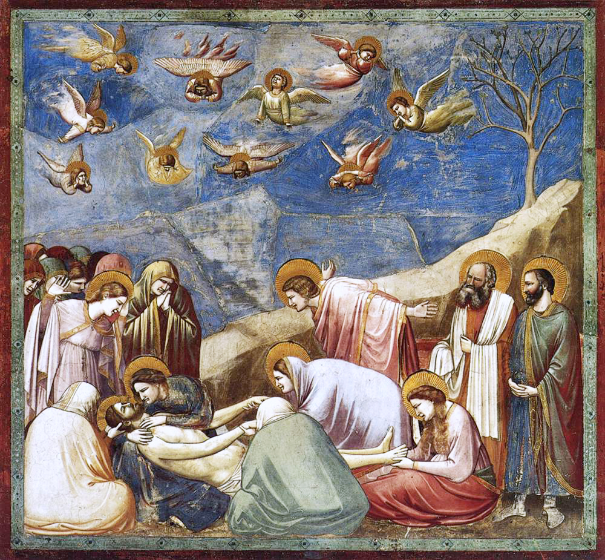
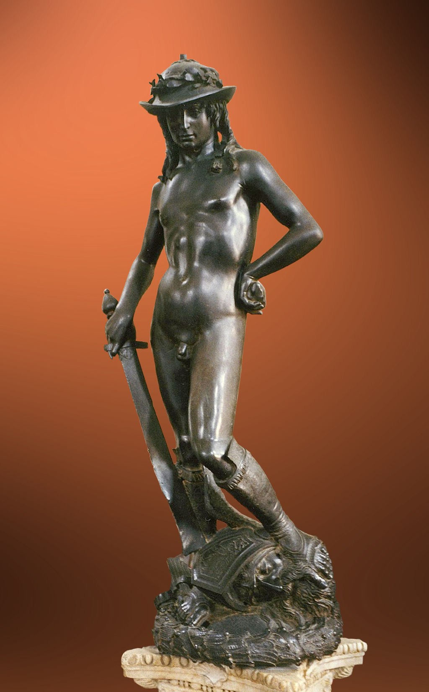
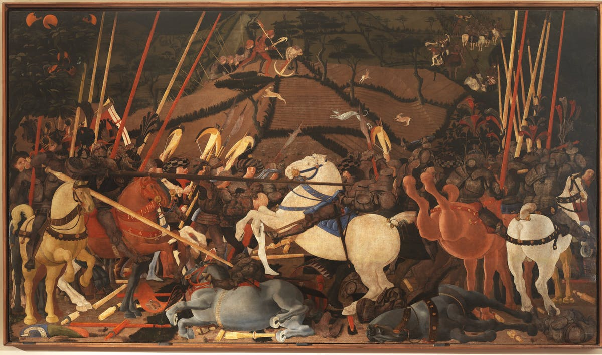

In Italy in the late 13th and early 14th centuries, the sculpture of Nicola Pisano and his son Giovanni Pisano, working at Pisa, Siena and Pistoia shows markedly classicising tendencies, probably influenced by the familiarity of these artists with ancient Roman sarcophagi. Their masterpieces are the pulpits of the Baptistery and Cathedral of Pisa.
Giotto: The Lamentation, c. 1305, Scrovegni Chapel, foreshadows the Renaissance.
Although both the Pisanos and Giotto had students and followers, the first truly Renaissance artists were not to emerge in Florence until 1401 with the competition to sculpt a set of bronze doors of the Baptistery of Florence Cathedral which drew entries from seven young sculptors including Brunelleschi, Donatello and the winner, Lorenzo Ghiberti. Brunelleschi, most famous as the architect of the dome of Florence Cathedral and the Church of San Lorenzo, created a number of sculptural works, including a lifesized Crucifix in Santa Maria Novella, renowned for its naturalism. His studies of perspective are thought to have influenced the painter Masaccio. Donatello became renowned as the greatest sculptor of the Early Renaissance, his masterpieces being his Humanist and unusually erotic statue of David, one of the icons of the Florentine republic, and his great monument to Gattamelata, the first large equestrian bronze to be created since Roman times.
Donatello, David (1440s) Museo Nazionale del Bargello.
The contemporary of Donatello, Masaccio, was the painterly descendant of Giotto and began the Early Renaissance in Italian Painting in 1425, furthering the trend towards solidity of form and naturalism of face and gesture that Giotto had begun a century earlier. From 1425-28, Masaccio completed several panel paintings but is best known for the fresco cycle that he began in the Brancacci Chapel with the older artist Masolino and which had profound influence on later painters, including Michelangelo. Masaccio's developments were carried forward in the paintings of Fra Angelico, particularly in his frescos at the Convent of San Marco in Florence.
Battle of San Romano (c. 1435-1455),Galleria degli Uffizi, Florence
The treatment of the elements of perspective and light in painting was of particular concern to 15th-century Florentine painters. Uccello was so obsessed with trying to achieve an appearance of perspective that, according to Vasari, it disturbed his sleep. His solutions can be seen in his masterpiece set of three paintings, the Battle of San Romano which is believed to have been completed by 1460. Piero della Francesca made systematic and scientific studies of both light and linear perspective, the results of which can be seen in his fresco cycle of The History of the True Cross in San Francesco, Arezzo.
In Naples, the painter Antonello da Messina began using oil paints for portraits and religious paintings at a date that preceded other Italian painters, possibly about 1450. He carried this technique north and influenced the painters of Venice. One of the most significant painters of Northern Italy was Andrea Mantegna, who decorated the interior of a room, the Camera degli Sposi for his patron Ludovico Gonzaga, setting portraits of the family and court into an illusionistic architectural space.
The end period of the Early Renaissance in Italian art is marked, like its beginning, by a particular commission that drew artists together, this time in cooperation rather than competition. Pope Sixtus IV had rebuilt the Papal Chapel, named the Sistine Chapel in his honour, and commissioned a group of artists, Sandro Botticelli, Pietro Perugino, Domenico Ghirlandaio and Cosimo Rosselli to decorate its wall with fresco cycles depicting the Life of Christ and the Life of Moses. In the sixteen large paintings, the artists, although each working in his individual style, agreed on principals of format, and utilised the techniques of lighting, linear and atmospheric perspective, anatomy, foreshortening and characterisation that had been carried to a high point in the large Florentine studios of Ghiberti, Verrocchio, Ghirlandaio and Perugino.